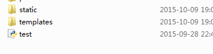

good luke!
三人行必有我师焉！
关于flask中背景图片使用问题 最近刚刚开始学习flask。我的图片是放在和和html文件同目录的pics文件夹，双击html文件，背景图片可以正常显示。但运行程序后在127.0.0.1:5000上无法显示背景图片。请教大神是是怎么回事（模板里相关代码如下） 《body background='pics/feather.jpg'>
你把项目整成这样子的目录格式 static 里面放 图片 js css 文件 templates 里面放 网页模板 在页面《body background='../static/feather.jpg'> 应该就可以了
